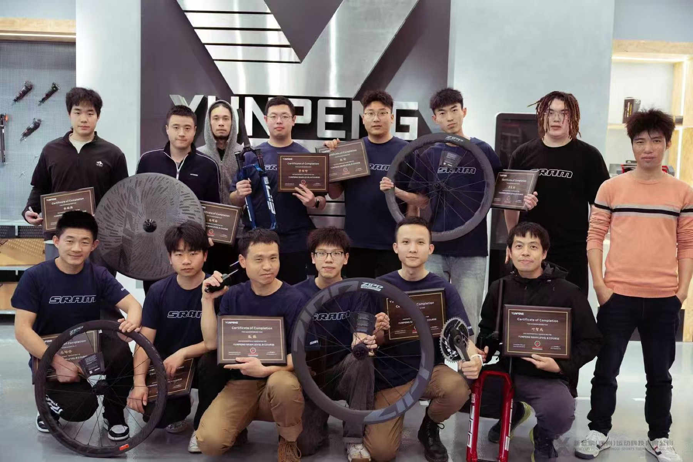
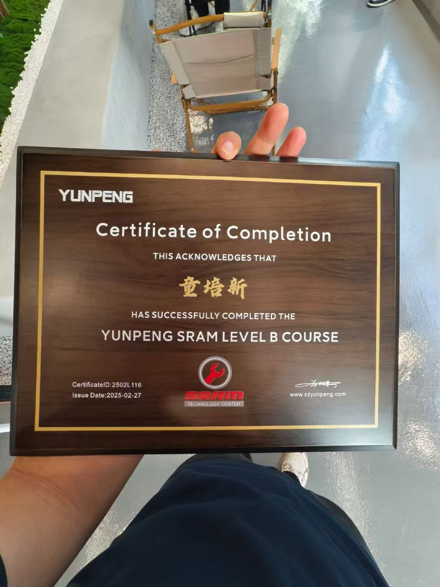
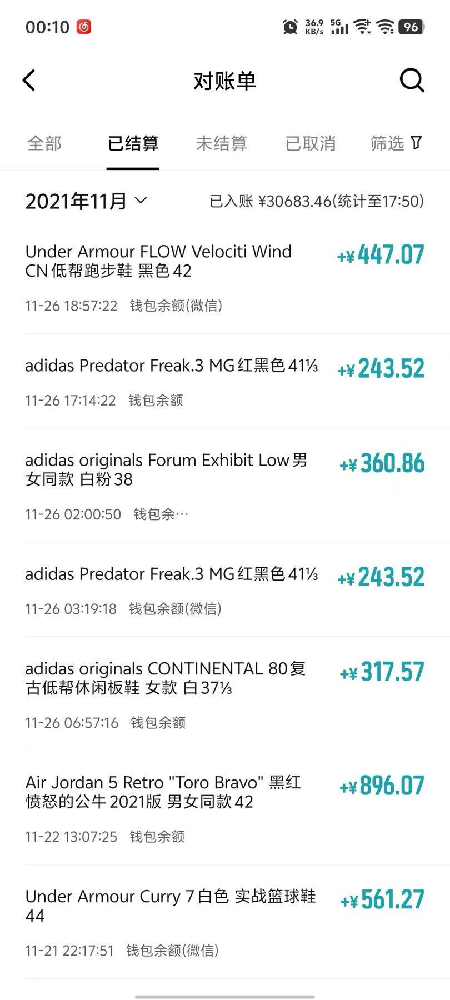
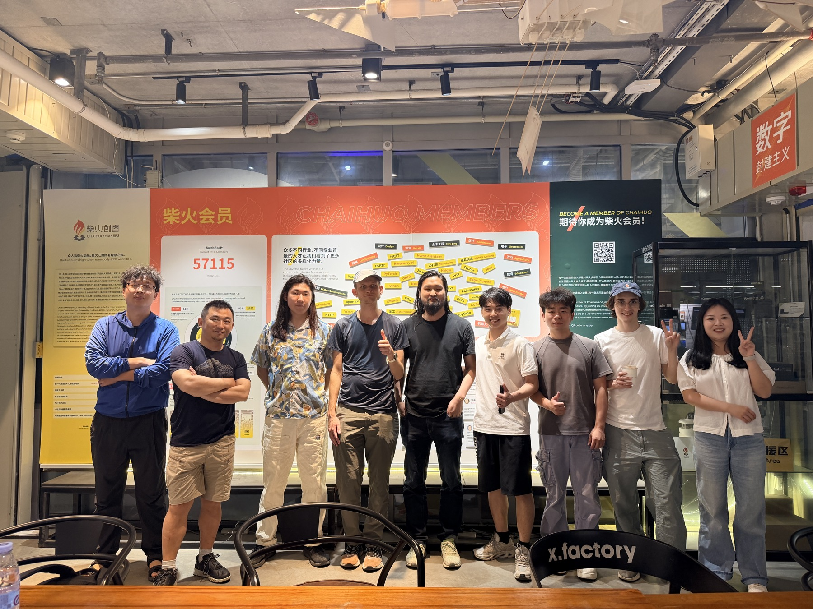

Each block is written as a product case: problem, context, execution, and learning.
01 · AI Wearable
Memory Pendant · 可穿戴式记忆项链
A wearable AI recorder prototype that combines continuous audio capture, mobile notes,
and model-assisted memory retrieval. 这个项目来自我自己的真实痛点：很多日常要点会被快速遗忘，
但传统便签又太依赖主动记录。
Role
Product concept, embedded prototype, app flow, 3D printed enclosure
Focus
Personal memory timeline, daily diary generation, privacy-aware UX
I founded and operated a cycling store after noticing demand for lightweight bicycles,
maintenance service, and community-based riding experiences. 这段经历让我直接接触骑行用户、
装备维护、门店运营和运动场景中的真实痛点。
2023.07 - 2025.09 took academic leave to operate full-time
Built daily retail, service, and rider community workflows
Currently delegated to a capable store manager while I returned to university

02B · Mechanical Training
SRAM Level B Course · 自行车机械结构训练
To move beyond sales and understand product structure, I completed SRAM Level B training
through Yunpeng Technology Center. The training strengthened my mechanical intuition for
drivetrain systems, wheels, service logic, and product reliability.

Certificate of Completion · 2025.02.27
03 · Sports Consumer Venture
Sneaker & Sports Brand Retail · 运动品牌经销
My first venture began in sports retail, representing brands including Puma, Adidas,
and Under Armour while studying at university. 这段经历训练了我对运动消费、渠道、库存周转、
用户偏好和线上内容的理解。
The bottleneck was also clear: sneakers and bicycles were still other companies' products.
As a dealer, I could optimize sales and service, but I could not define the product itself.
This is why I am now shifting toward building my own hardware and software products.

Settlement record sample, used only as operational proof.
04 · Development & Hardware Exploration
Hardware Exploration · 创客、硬件展与黑客松
I actively joined maker communities and hardware events in Shenzhen, including Chaihuo
Makers and Seeed Studio / Hugging Face activities. These experiences helped me connect
software engineering, embedded hardware, AI tooling, and product prototyping culture.
这也是我频繁前往深圳的原因：我希望更靠近硬件供应链、创客社区和真实产品团队。

04B · Personal Tool Prototype
AI Agent Keyboard · 带屏幕的键盘
A wooden-shell keyboard prototype with a small display, designed as a companion screen
for running multiple AI agents in parallel. The keyboard works with my own fast window
splitting workflow to reduce main-screen congestion. 细节暂不公开，但它体现了我从自己的工作流痛点出发，
设计实体工具的能力。
Path
Timeline / 时间线
Entered Jiangsu University of Science and Technology, Civil Engineering / Embedded Software Engineering. Started sports sneaker media and retail venture during freshman year.
Operated sports retail while studying; learned online marketing, inventory turnover, and customer demand in athletic products.
Took academic leave and operated cycling store / rider hub full-time. Later delegated daily operations and returned to junior-year study.
Shifted focus toward embedded software engineering, AI hardware prototypes, and maker community learning in Shenzhen.
Capabilities
Skills / 能力模块
Product & Business
Retail operations, sports consumer insight, user research, inventory and service workflow, community building.
Mobile app concepting, AI-assisted retrieval, multi-agent workflow design, fast desktop productivity tooling.
Communication
Chinese / English mixed presentation, founder storytelling, demo-oriented product explanation.
Quick CV
Payson Tong · 童培新
Undergraduate student at Jiangsu University of Science and Technology, studying Civil Engineering /
Embedded Software Engineering, with self-directed work in software and embedded systems.
Current direction: sports technology, AI hardware, wearable devices, and product design grounded in real operating experience.